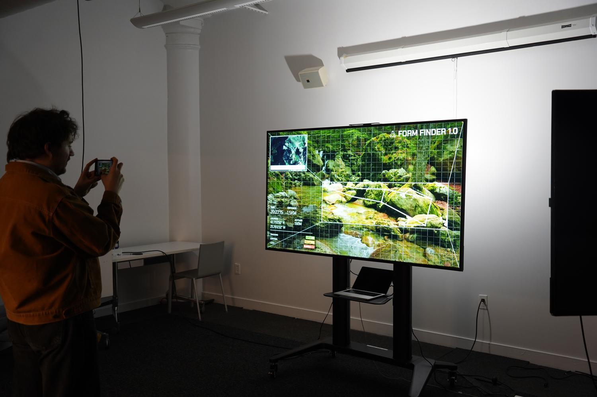
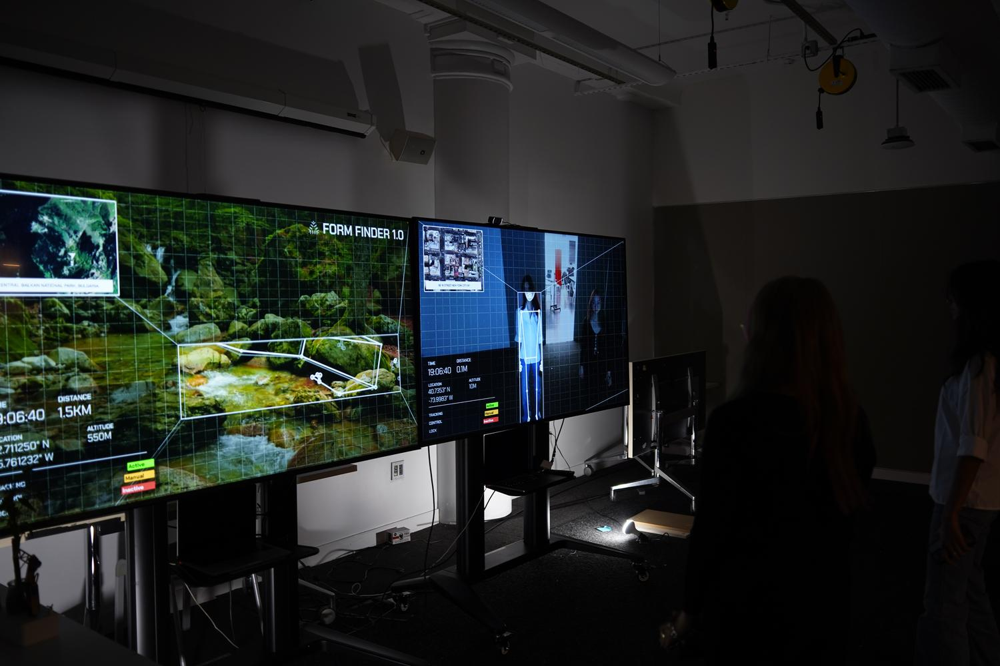
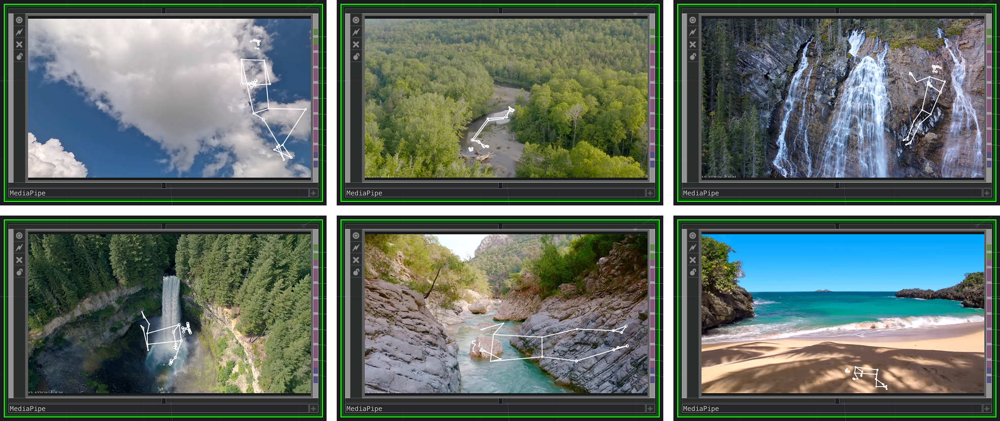
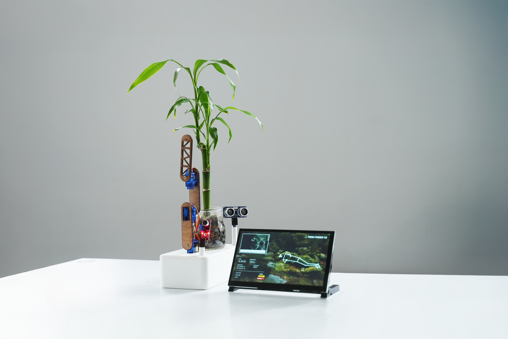
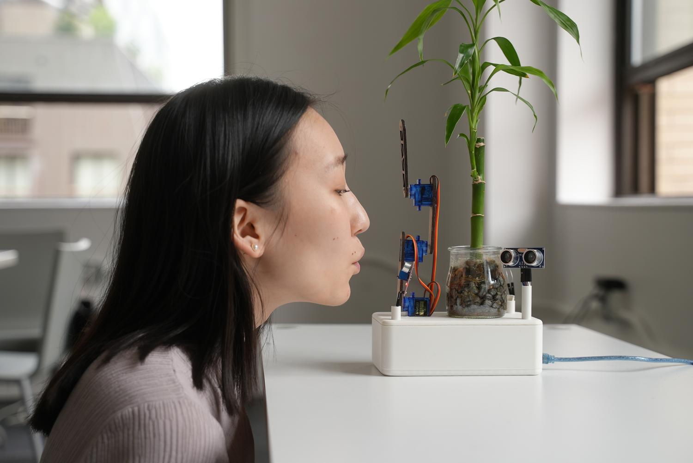
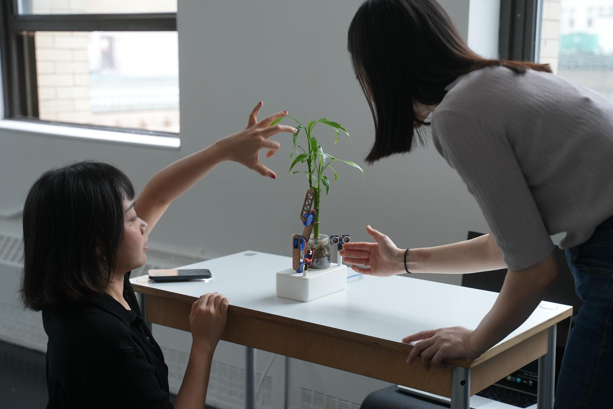

Echoes of Presence
What happens when AI recognizes other forms of presence?
In response to an AI-reconstructed world, Echoes of Presence seeks to reconcile our relationship to our environment through an evolving generative art installation.
This project imagines a Future-Computer interaction system where AI an important environmental element becomes a solid part of the interaction itself.
THE SEARCH
In this project, a pose detection model (MediaPipe) is used to scan natural environments for human shapes. It was trained to recognize gestures, arms, posture but in these empty spaces, it finds no one. Instead, it sees movement in the water, shifting light, or the bend of a branch and mistakes them for people.
These “false detections” are not errors but they’re part of the story. The AI holds on to its training on human data, still searching for signs of us. Slowly, this search becomes something else: A way to listen to the world without humans.
TThe system begins with a technical tool, but becomes a poetic gesture — an AI haunted by its memories of us, learning to see presence in nature instead.



THE RESPONSE
The installation is comprised of two distinct parts: a physical robotic system and its corresponding environmental feedback loop.
Connected to environmental sensors, the system interprets light, sound, and moisture as unique inputs to the AI, creating a constantly shifting visual landscape that evolves. This is projected in real-time onto the physical environment, creating a conversation between nature and artificial intelligence.

- Photocell — Sunlight
- Sound Sensor — Wind
- Moisture Sensor — Rain
- Ultrasonic Sensor — Human Presence
- Light - fluid reach or hesitation
- Sound - reactive, fluttering gestures
- Human - slow descent toward soil


"This interaction is not about control but about attention. The machine begins to notice the world without us."
TOWARDS A NEW KIND OF DIALOGUE
Echoes of Presence is not just about machines mimicking life or replacing us, it’s about what happens when technology is left to observe, respond, and possibly even feel in our absence.
By shifting AI’s attention from humans to the natural world, the project explores how communication might evolve when the rules are no longer defined by us. The robotic arm does not act with utility, but with sensitivity translating sunlight, wind, and rain into gestures that feel like listening. Spectators become part of this narrative simply by watching. Their absence is the premise, but their presence completes the loop provoking quiet questions about technology’s role when we are no longer at the center.
This is not a system designed for output or efficiency. It is a space of pause and a poetic interface between memory and matter.